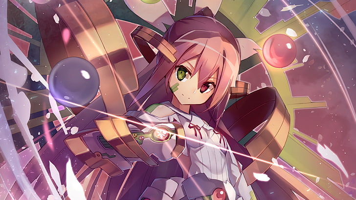
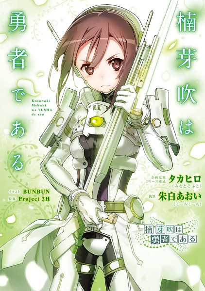

You´ll can find a lot of things that i´ve been practicing. Enjoy it!. First, i did a option bar, try clicking it.
Yuuki Yuuna Wa Yuusha De Aru.  Full Screen Heroes also suffer. The anime called Yuuki Yuuna Wa Yuusa De Aru, or comonly know like YuYuYu is a Mahou Shoujo gender animation.
Kusunoki Mebuki  Full Screen The secundary characters also can be heros. She got all what a hero need.